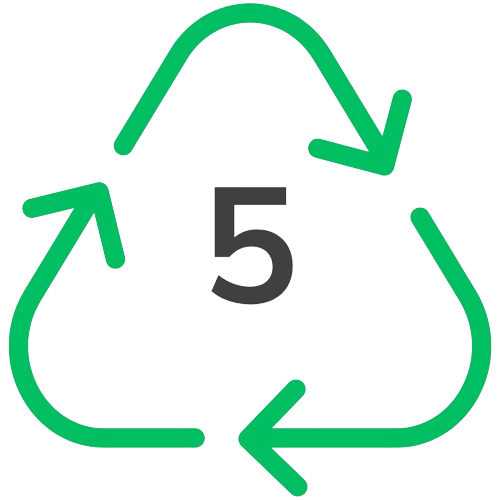

Recycling in NZ
From February 2024, New Zealand implemented a nationwide standardisation of recycling, introduced by the Waste Minimisation (Waste Disposal Levy) Amendment 2024 .
If in doubt, you can refer to your local council for waste management guidelines. But as a general, nationwide rule, this website covers what items you can/can't recycle.
Take a look below to see what common items you can - and can't - recycle.
What plastics can I recycle?
PET
HDPE
PP
New Zealand currently can't recycle all plastics, so it's important to make sure you're recycling the right ones. The easiest way is to look at the recycling symbol on your packaging before throwing it out. If it has the number 1, 2 or 5 it can go straight in your recycling bin!